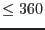
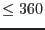

| Parameter | Mand | Type | Default | Constraints |
| datastyle | no | string | set | user|set |
By use of this parameter, the user can specify the style of input and output desired. If datastyle=`user', the task looks for position information for a single source in the parameters ra and dec. If datastyle=`set', the task looks for the source positions stored in columns RA and DEC of a FITS table specified by the parameter intab.
|
| intab | no | table | inset.ds:INPUT | |
Name of the FITS table that contains the sky positions. Active only if datastyle=`set'.
|
| withouttab | no | boolean | no | |
Active only if datastyle=`set'. If withouttab=`yes', the task looks for outtab and writes the output to this file. Otherwise the output is written to columns in the intab.
|
| outtab | no | table | outset.ds:OUTPUT | |
Name of the FITS table that is to contain the camera-centric positions. Active only if datastyle=`set' and withouttab=`yes'.
|
| X | yes | double | 0.0 | |
The X coordinate of the input position. Active only if datastyle=`user'. This refers to a detector coordinate if inputunit=`det' or a
raw chip coordinate if inputunit=`raw'.
|
| Y | yes | double | 0.0 | |
The Y coordinate of the input position. Active only if datastyle=`user'. This refers to a detector coordinate if inputunit=`det' or a
raw chip coordinate if inputunit=`raw'.
|
| ccd | yes | integer | 1 | |
The CCD number relevant for an input RAW coordinate. Active only
if datastyle=`user' and inputunit=`raw'.
|
| withheader | no | boolean | yes | |
Active only if datastyle=`user'. If withheader=`yes', the task prints some lines of header information before printing the source position lines; if `no', this is omitted. The `no' setting is convenient for those wishing to run edet2sky
from a script.
|
| mosccdnode | no | string | primary | primary|redundant |
This allows the user to specify the readout node for positions on the MOS instruments. It is enabled only if outunit=`raw', and ignored for PN.
|
| calinfostyle | no | string | set | set|user |
If `set' the task obtains information about the instrument and spacecraft pointing from calinfoset; if `user', this information is obtained from parameters instrument, datetime, scattra, scattdec and scattapos.
|
| calinfoset | yes | dataset | calinfo.ds | |
The name of the dataset in which information about the instrument and spacecraft pointing etc is stored in keywords.
|
| instrument | yes | string | EMOS1 | EMOS1|EMOS2|EPN |
Active only if calinfostyle=`user'. The name of the relevant XMM instrument.
|
| datetime | yes | string | 0000-00-00T00:00:00 | |
If calinfostyle=`user', the date and time are expected via this string parameter.
|
| scattra | yes | angle | 0.0 |  attra attra |
The right ascenscion (in any of the allowed angle-parameter formats) of the spacecraft pointing. Active only if calinfostyle=`user'.
|
| scattdec | yes | angle | 0.0 |  attdec attdec |
The declination (in any of the allowed angle-parameter formats) of the spacecraft pointing. Active only if calinfostyle=`user'.
|
| scattapos | yes | angle | 0.0 | attapos |
The position angle (in any of the allowed angle-parameter formats) of the spacecraft pointing. Active only if calinfostyle=`user'.
|
| Parameter | Mand | Type | Default | Constraints |